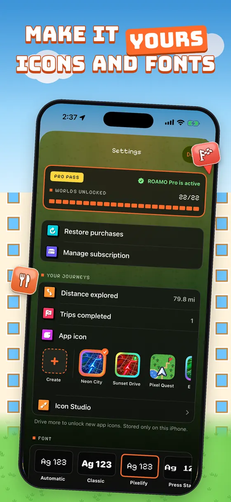

iPhone용 GPS 내비게이션
우리 동네가 게임 속 월드로.
ROAMO는 검색, 경로, 음성 안내를 모두 갖춘 진짜 내비게이션 앱입니다. 모든 길과 공원, 강이 내가 좋아하는 게임 장르 스타일로 다시 그려집니다.
iOS 17 이상의 iPhone 및 iPad · CarPlay · Apple Watch
월드를 탭해 지도를 바꿔 보세요
22개의 월드. 기분 따라 골라요.
월드를 고르면 지도 전체가 바뀝니다. 땅, 물, 도로, 라벨, 경로 색까지. 월드를 탭하면 위 휴대폰에서 바로 미리 볼 수 있어요.
게이머를 위한
귀엽고 아늑한
스타일리시
학생을 위한
모험가를 위한
시즌 한정
1분 만에 시작하기
ROAMO는 진짜 턴바이턴 내비게이션 앱이에요. 계정을 만들 필요 없이 열고 바로 출발하세요.
- 위치 접근을 허용하면 ROAMO가 현재 위치를 보여주고 길을 안내해요.
- 검색하거나 말하기: 주소나 장소를 입력하거나, 마이크를 탭하거나, 주유소, 충전소, 카페 같은 주변 카테고리를 고르세요.
- 자동차, 자전거, 도보로 경로를 미리 보고 가장 빠른 길과 가장 짧은 길을 비교하세요.
- 출발을 탭하세요. 큰 회전 카드, 제한 속도 옆의 현재 속도, 음성 안내가 목적지까지 데려다줘요.
재밌는 겉모습 속에는 진짜 내비게이션
A에서 B까지 가는 데 필요한 모든 것. 차에서도, 자전거에서도, 걸을 때도 한 손으로 쓰도록 만들었습니다.
어디든 검색
빠른 자동 완성으로 주소와 장소를 찾으세요.
음성 검색
가고 싶은 곳을 말하세요. 음성은 기기에서 인식됩니다.
탭 한 번으로 주변 검색
주유소, 전기차 충전, 맛집, 카페, 호텔, 주차장, 마트.
집, 회사, 즐겨찾기
자주 가는 곳을 저장하고 바로 경로를 시작하세요.
주차 위치 저장
탭 한 번으로 주차한 곳을 저장해 나중에 걸어서 돌아가세요.
핀 꽂기
지도를 길게 눌러 핀을 꽂고 그곳까지 안내받으세요.
자동차, 자전거, 도보
출발 전에 가장 빠른 경로와 가장 짧은 경로를 비교하세요.
큼직한 회전 안내 카드
한눈에 읽히는 선명한 턴바이턴 안내.
음성 안내
음성, 부드러운 알림음, 무음 중에서 고르세요.
속도계와 제한 속도
현재 속도를 도로 제한 속도와 나란히 보여 줍니다.
자동 경로 재탐색
길을 놓쳤나요? ROAMO가 자동으로 새 경로를 찾아요.
야간 톤
해가 지면 지도가 자동으로 어두워져 눈이 편안해요.
3D 건물
일부 월드에서는 건물이 3D로 솟아올라요.
코파일럿 음성
월드마다 전용 코파일럿이 말할 수 있어요. 클래식은 무료, 캐릭터 음성은 Pro에 포함돼요.
앱 아이콘 열기
주행 거리 10~1,000km마다 대체 앱 아이콘 6개가 열려요.
11개 언어
영어, 스페인어, 프랑스어, 독일어, 포르투갈어, 이탈리아어, 일본어, 한국어, 중국어, 러시아어, 베트남어.
CarPlay에서 ROAMO
게임 스타일 지도, 검색, 턴바이턴 안내를 차량 화면에서. iPhone과 동기화돼요.
- iPhone을 차량에 케이블 또는 무선으로 연결하세요.
- CarPlay 홈 화면에서 ROAMO를 탭하세요.
- 차량 키보드로 검색하거나 최근 장소나 즐겨찾기를 고른 다음 출발을 탭하세요.
- 운전 중에는 지구본 버튼으로 월드를 바꾸고, 종료로 안내를 끝내세요.
차량에 ROAMO가 보이지 않나요? iPhone에서 설정 › 일반 › CarPlay를 열고 차량을 선택한 다음, 사용자화를 탭해 ROAMO를 추가하세요.

잠금 화면과 Apple Watch에서
안내 중에는 앱 밖에서도 다음 회전이 따라와요.
- 실시간 현황: 다음 회전과 도착 시간을 잠금 화면과 Dynamic Island에 표시해요. iPhone 설정 › ROAMO › 실시간 현황에서 허용하세요.
- 위젯: 홈 화면에 ROAMO를 추가하면 한 번 탭으로 집이나 회사로 가는 경로를 시작해요.
- Apple Watch: 회전 카드, 지도, 집, 회사, 즐겨찾기를 손목에서. iPhone의 Watch 앱 ‘사용 가능한 앱’에서 설치하세요.
- Siri: “ROAMO로 집에 가기” 또는 “ROAMO로 근처 카페 찾기”라고 말해 보세요.


나만의 스타일로
- World Studio(Pro): 22개 월드 중 하나에서 시작해 색을 바꾸고, 사진을 텍스처로 쓰고, 장소 아이콘을 직접 그려 보세요. 월드 바꾸기를 탭한 다음 나만의 월드 만들기를 고르세요.
- 포인터: 차량용 게임 포인터를 고르거나 사진으로 나만의 포인터를 만드세요.
- 앱 아이콘: 주행 거리 10, 50, 100, 250, 500, 1,000km마다 대체 아이콘 6개가 열려요. 설정 › 앱 아이콘에서 확인하세요.
- 월드 공유: .roamoworld 파일을 AirDrop, 메시지, 파일로 보내세요. 서버를 거치지 않아요.



여행을 비디오로
안내받은 여행은 모두 내 월드에서 경로를 다시 보여주는 비디오가 될 수 있어요. TikTok, 릴스, 쇼츠에 바로 올릴 수 있어요.
- 여행은 안내 중에 기록되고 iPhone에만 저장돼요. 설정 › 여행 기록에서 끌 수 있어요.
- 도착하면 여행 비디오 만들기를 탭하거나, 나중에 설정 › 여행 및 비디오를 여세요.
- 형식(9:16, 1:1, 4:5, 16:9), 길이, 필터, 제목, 음악을 고르세요.
- 사진에 저장하거나 공유하세요. Pro에서는 워터마크가 없고 내 음악을 쓸 수 있어요.
전면 카메라의 짧은 클립(소리 없음)을 추가할 수도 있어요. 켰을 때만 촬영되고 iPhone에만 저장돼요.

개인정보 보호 약속
당신의 이동 기록은 당신만의 것.
ROAMO에는 데이터를 모으는 서버도, 계정도, 추적기도 없습니다. 최소한만 필요하도록 설계했습니다.
계정 없음
앱을 열고 바로 출발. 가입도, 이메일도, 로그인도 없습니다.
분석도 광고도 없음
광고, 분석 도구, 추적 SDK가 전혀 없습니다.
위치는 휴대폰 안에만
GPS 위치는 안내를 위해 기기에서만 사용되며 어떤 서버에도 저장되지 않습니다.
요청에 필요한 것만
장소나 경로를 찾을 때 지도 서비스(Geoapify)에는 그 요청에 필요한 정보(검색어, 주변 지점, 또는 경로의 출발지·경유지·목적지)만 보내요.
무료로 시작하고, 모든 월드를 여세요.
Block World와 Doodle Notebook은 평생 무료예요. ROAMO Pro로 22개 월드 전체, World Studio, 캐릭터 코파일럿 음성을 쓸 수 있어요.
무료
$0
Block World + Doodle Notebook 평생 무료, 검색과 내비게이션 기능 전부 포함.
주간
$3.99 / 주
22개 월드 전체 + World Studio
월간
$6.99 / 월
22개 월드 전체 + World Studio
- 가장 알뜰
연간
$39.99 / 년
22개 월드 전체 + World Studio
평생
$79.99 1회 결제
22개 월드 전체 + World Studio
가격은 미국 달러 기준이며, 국가별 App Store 가격은 다를 수 있습니다. 구독은 현재 기간 종료 최소 24시간 전에 해지하지 않으면 자동으로 갱신됩니다. App Store 계정 설정에서 언제든지 관리하거나 해지할 수 있습니다. 이용약관 · 개인정보 처리방침
궁금한 점? 여기 있어요.
ROAMO는 무료인가요?
계정이 필요한가요?
어떤 기기를 지원하나요?
ROAMO가 저를 추적하나요?
지도 데이터는 어디서 오나요?
ROAMO는 특정 게임과 관련이 있나요?
구매를 복원하려면?
구독을 해지하려면?
‘지도 서비스 일일 한도에 도달했습니다’가 뜨는 이유는?
언어를 바꾸려면?
마일과 킬로미터 전환이나 음성 끄기는?
파란 점이 움직이지 않거나 엉뚱한 곳에 있어요.
내 여행과 비디오가 어딘가에 업로드되나요?
ROAMO 1.0 도움말 센터
무엇을 도와드릴까요?
iPhone, iPad, CarPlay, Apple Watch에서 ROAMO를 쓰는 단계별 안내와 구입 및 개인정보 보호에 관한 답변입니다.
유용한 링크
문의하기
info@deeplyai.app로 메일을 보내 주세요. iPhone 모델, iOS 버전, 문제에 대한 간단한 설명을 함께 적어 주시면 좋아요. 보통 영업일 기준 2일 이내에 답변드립니다.
스크린샷은 영어 버전 앱입니다.